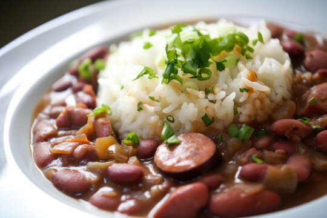

Red Beans and Rice

Description
Red beans and rice is a southern favorite dish, popular in Lousiana. The dish may traditionally is cooked with Ham Hocks however, I prefer to substitute that with andouille sausage. Although, you may switch the sasuage with a regular smoked beef sasuage for a more mild dish.
Ingredients
- 1 package of andouille sausage.
- 1 can of dark red
- 2 stalks of celery
- 1 yellow or white onion your preference
- 1 green bell pepper
- 2 cups of chicken stock
- 1 tablespoon of minced garlic
- 2 bay leaves
- 1 tablespoon of your favorite salt free Cajun seasoning
- 1 teaspoon of dried thyme
- 2 cups of your favorite brown or white rice
- 1 half stick of butter
Steps
- thinnly slice sausage
- heat pan to medium and add half stick of butter
- add sausage to pan and let brown during next step remember to stir frequently
- cut onion, celery and bell pepper into small pieces
- remove sausage from pan after browning
- add chopped veggies to pan that sausage browned in
- allow veggies to cook in pan with drippings till onion until soft
- drain can of beans then add be sure to mix well
- after beans mixed add chicken stock
- start cooking the 2 cups of rice with prefered method
- readd sausage to pot and bring up to a boil
- once at boil add all seasonings then reduce to simmer remember to mix
- after rice is down mash 3-4 spoonfuls of beans on side of put then stir
- serve over rice with prefered hot sauce!
- ENJOY!